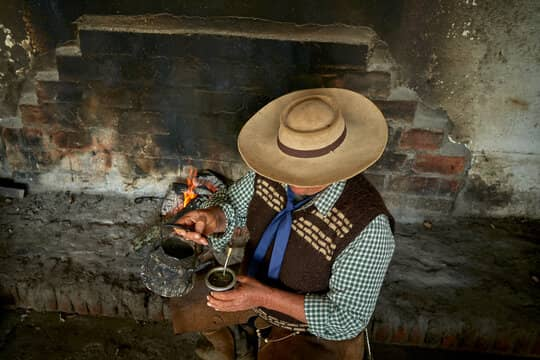
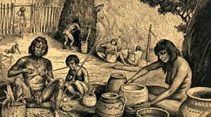

História del Mate
¿Qué es el mate para Argentina?
El mate es más que una bebida en Argentina; es un símbolo de amistad, cultura y resistencia. Pero, ¿sabías que su historia es súper rica y tiene raíces bien profundas en el tiempo? Te cuento, pero tranqui, sin tanto libro de historia de por medio.
El origen: mucho antes de la llegada de los europeos
Todo empieza con los guaraníes. Ellos ya tomaban esta infusión como un ritual re espiritual y energizante. Agarraban las hojas de yerba mate, las secaban, las molían, y las tomaban en calabazas. ¡Eran unos visionarios! Creían que el mate era un regalo de los dioses para estar más pilas y conectar con la naturaleza. 🌿✨
La llegada de los europeos: "¿Qué es esto?"

Cuando llegaron los colonizadores españoles, se encontraron con esta costumbre y al principio la miraron medio raro. Pero después de un tiempo, le agarraron el gustito. Les encantó porque, claro, era como un "café portátil" que te daba energía para bancarte las largas jornadas.
La explosión del mate
Con el tiempo, el mate se volvió más popular y se empezó a cultivar a lo grande en lo que hoy es Misiones y Corrientes. Ahí es donde se produce la mayor parte de la yerba que usamos hoy. Y ojo, que no todo es "mate amargo"; en algunas zonas se lo toma dulce, con cáscaras de naranja, y hasta con yuyos. Cada región le pone su onda.
El mate hoy: el rey de la ronda
Hoy, el mate es EL símbolo de compartir. Se toma en familia, con amigos, en el trabajo, o hasta solo. Es como un puente social que une generaciones y rompe el hielo. Y ni hablar de la pandemia, cuando nació el “mate individual” y todos sufrimos un poco.
El mate tiene su propio idioma:
la bombilla, el termo, la yerba, el cebador (¡que no se duerma!). Es toda una ceremonia que nos define como argentinos. Así que, la próxima vez que armes un mate, pensá que estás continuando una tradición de siglos. Y sí, aunque sea algo cotidiano, tiene toda una historia por detrás.